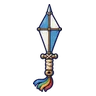
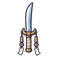
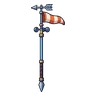
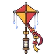
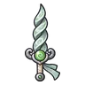
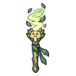
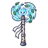
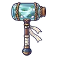

ภูตลมหมุน
มอนธาตุลม Lv 36–50
เจอที่
| แมพ | โซน | Lv | ภูมิภาค |
|---|---|---|---|
| ทุ่งลมหวีดหน้าผา | 42–47 | ที่ราบสูง | |
| ทุ่งลมหวีดหน้าผา | ยอดผาลมแรง | 46–50 | ที่ราบสูง |
| ทุ่งเฮเทอร์ม่วง | 36–44 | ที่ราบสูง | |
| ทุ่งเฮเทอร์ม่วง | กระท่อมหินหลังคาหญ้า | 44–48 | ที่ราบสูง |
| ช่องเขาเสาหินหวีด | 36–44 | ที่ราบสูง | |
| ช่องเขาเสาหินหวีด | เสาหินรูหวีด | 44–48 | ที่ราบสูง |
| กังหันลมร้างริมผา | 36–44 | ที่ราบสูง | |
| กังหันลมร้างริมผา | กังหันลมหินร้าง | 44–48 | ที่ราบสูง |
ค่าสถานะตามเลเวล
| Lv | HP | ATK | DEF | MDEF | EXP | Job |
|---|---|---|---|---|---|---|
| 36 | 3,582 | 56–85 | 7 | 13 | 37 | 28 |
| 43 | 5,890 | 72–109 | 9 | 15 | 43 | 32 |
| 50 | 8,976 | 84–125 | 10 | 18 | 49 | 37 |
ตีด้วยธาตุไหนดี
แรงขึ้น: ดิน ×1.5 พิษ ×1.25
เบาลง: น้ำ ×0.5 ลม ×0.25
วัตถุดิบที่ดรอป
| ของ | โอกาส | |
|---|---|---|
| ลูกแก้วลมหมุน | 60% | 1 ชิ้น (15% ได้ 2) |
อุปกรณ์ที่ดรอป (9)
| ของ | โอกาส |
|---|---|
 มีดคู่ว่าวกระดาษ | 0.12% |
 ดาบคู่กระดิ่งลม | 0.12% |
| ดาวยักษ์ภูตลมหมุน | 0.12% |
 หอกยาวถุงลม | 0.12% |
 ไม้เชิดหุ่นว่าว | 0.12% |
 ดาบลมหมุน | 0.12% |
 คบเพลิงลมหมุน | 0.12% |
 ขวานยักษ์ลมหมุน | 0.06% |
 ค้อนยักษ์ขวดลมหมุน | 0.06% |
สกิล
หลบ (Lv 25+) · หลบ (Lv 60+) · ยิงกระจาย (Lv 60+)